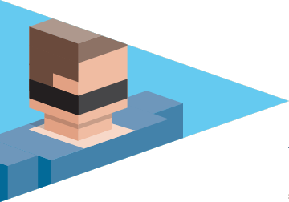
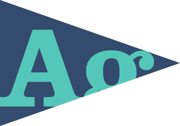
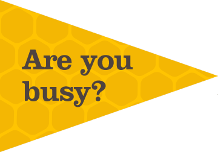

The Navypedia
Everything we do - from watering the plants to running a board meeting - is documented in our wiki. We put a lot of emphasis on knowledge management.
This means that all of the things we do to keep the business running smoothly are efficient and consistent. Which means less time for admin and more time for real work.

I've heard you have "quiet time" every day. How does that work?
Three hours a day at Navy is "quiet time" (no phones, email, talking, music etc.). You're not allowed to talk to the person next to you, and if the phone rings, you have to leave the room to answer it.
There have been various studies about this which suggest that it can really increase efficiency and productivity. We've found it's a great way to get a lot done without interruptions.
If you're interested in reading more about the topic, this
New York Times article
is a great place to start.

Using "agile" concepts to manage the design process
Although agile was originally a philosophy of software development, we apply the same principles to the management of our design process.
We have daily standups, use taskboards, burndown charts and other agile techniques to manage work through our studio.
Of course this approach fits really nicely with agile development teams we work with. If you're interested in more detail,
drop us a line.
We love talking about this stuff.
Navy is 100% cloud based tech setup

Our answer to this question is a bit different to other peoples. We try not to get too busy. We prefer to do less things but do them well.
Unfortunately this means that sometimes we have to say no to great projects. But we think it's worth it.
Read Tim Kreider's article
"The Busy Trap"
Where are your awards?
Navy has a policy of not entering awards. Here's why:
- Award entries take up lots of time
- It's hard for awards to recognise good UX (unless the judges happen to be members of the target audience)
- Trying to win awards can distract people from the real goals of a project.